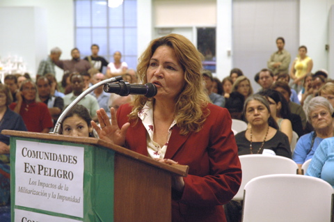

To counter the 21 anti-immigrant "field hearings" held across the U.S. this summer by members of Congress, the Tucson-based Coalición de Derechos Humanos (Coalition for Human Rights) holds its own hearing on August 17. Gloria Mitchel, the aunt of Juan de Jesús Rivera Cota, cries as she recounts the circumstances that led to her 16-year-old nephew's murder by a U.S. Border Patrol agent on May 11, 2005.